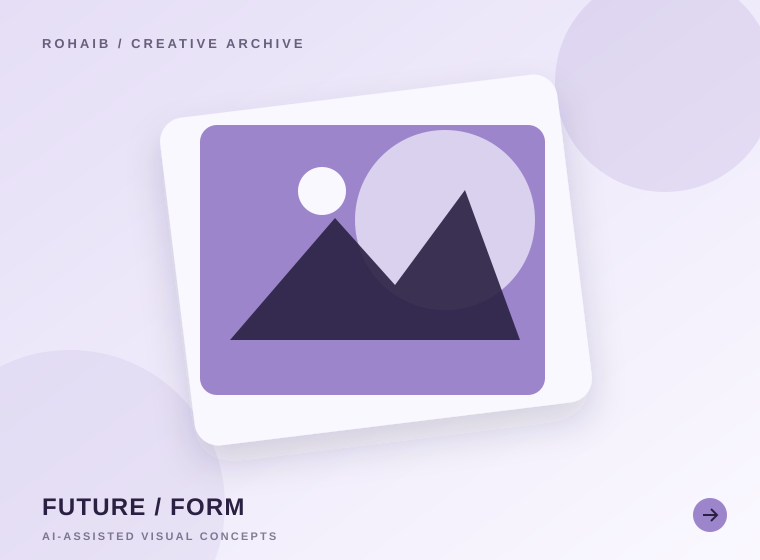

Curiosity
Stay open to references, new techniques and unexpected directions.
I’m Muhammad Rohaib, an independent creative from Karachi, Pakistan. I work across visual design, image editing, video and digital experiences — connecting craft with curiosity.
INDEPENDENT / MULTI-DISCIPLINARY
IDEAS IN MOTION / MR—001Some projects need a strong identity. Others need a better image, a story that moves, a useful document or a digital experience that feels effortless. I enjoy moving between those disciplines and finding the right visual language for the job.
My focus is simple: listen well, understand the brief, work through the details and deliver something you can confidently use.
Tell me what you’re making ↗Stay open to references, new techniques and unexpected directions.
Make the message easy to understand before making it look beautiful.
Sweat the details, from spacing and colour to timing and export settings.
Good results come from good communication and shared expectations.